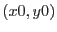
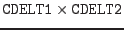
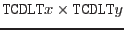

XMM-Newton Science Analysis System
selectlib (selectlib-4.74.1) [xmmsas_20170112_1337-16.0.0]
mask(x.msk,x0,y0,x,y)
is true if the value of the mask image shifted by 
in the data set x.msk at the location  is not equal to zero.
is not equal to zero.
If the specified mask image contains the
World-Coordinate-System (WCS) attributes
CRPIXx, CRVALx, CDELTx with
x being either 1 or 2, image coordinate values are computed
from the respective integer pixel numbers  as
as
This effectively defines the pixel size in the mask image as
.
If symbolic names have been specified in the mask filter command
as x and y and the corresponding columns in the
processed table have associated WCS-attributes
TCRPXx, TCRVLx, and TCDLTx respectively
the actual coordinate values are calculated as above. This effectively
defines the table pixel size as
.
The mask filter expression then evaluates to true for each ``table pixel''
if it has no overlap with any image mask pixel.
Mask images are ordinary rectangular arrays of any
integral type supported by the dal.
XMM-Newton SOC/SSC -- 2017-01-12